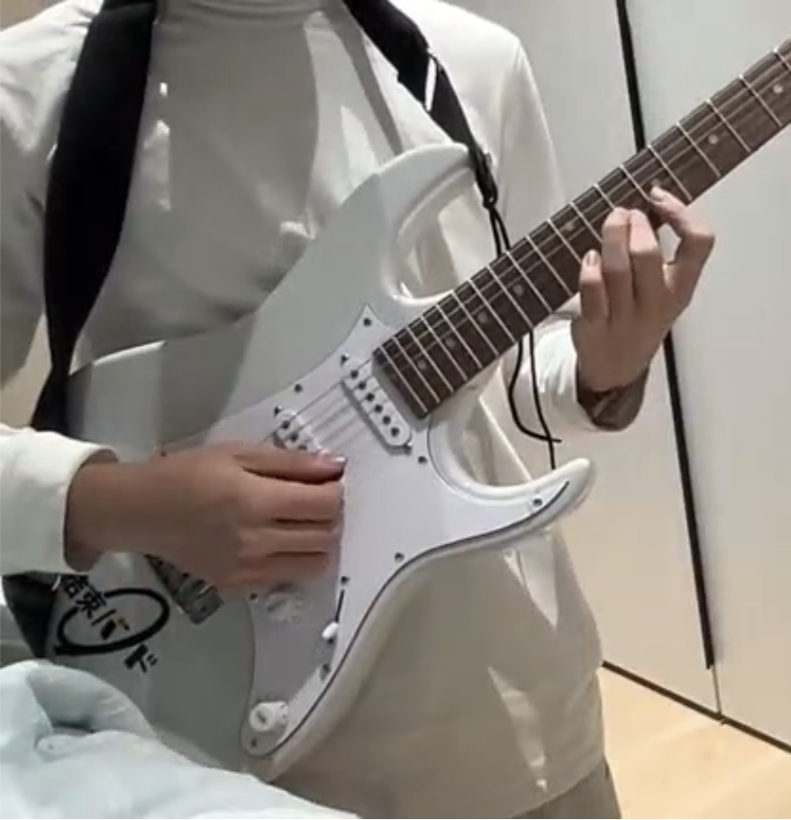

Guitar Hobby
My Experience
I started learning guitar during middle school. At first, it was difficult to manage the chords and strumming rhythm. But as time went on, I began to enjoy playing and found it a great way to express emotion and creativity. Now, playing guitar is one of my favorite ways to relax and recharge.
What I Learned
- Basic chords and finger placement
- Popular songs and fingerstyle techniques
- Music theory fundamentals like scales and progressions
- Improvisation and composing short melodies
Where You Can Learn
- Justin Guitar - Free lessons for all levels
- YouTube - Channels like Marty Music, GuitarZero2Hero
- Udemy - Structured courses with feedback
- Local music schools or private tutors
Why It Matters
Learning guitar improves coordination, boosts creativity, and is a great stress reliever. It also helps with patience and persistence, which are important in all areas of life. Whether you want to perform or just play for fun, music will always enrich your life.